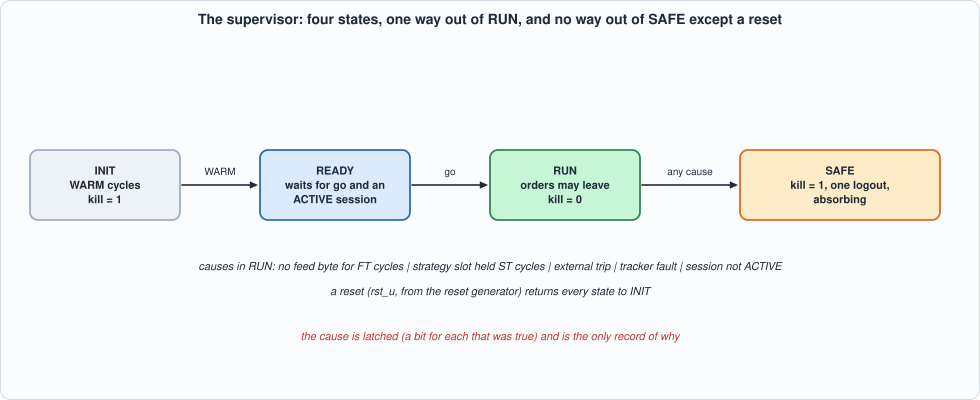
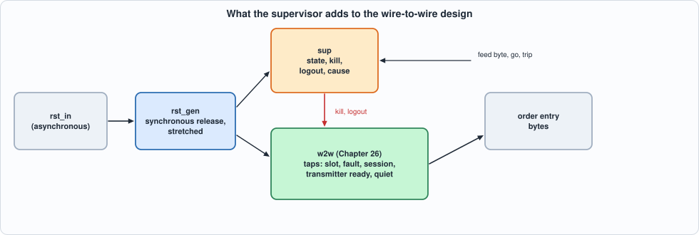

27. Resets, Power-Up, Watchdogs and Safe States: A Supervisor That Decides Whether Orders May Leave¶
About the kestrels in this picture
- Lesser kestrel (Falco naumanni) breeds in colonies in Mediterranean Europe and Central Asia and migrates to Africa for the winter. It feeds largely on large insects and nests in cavities in old buildings and cliffs.
- Seychelles kestrel (Falco araeus) is found on the granitic islands of the Seychelles. It is a small kestrel that hunts lizards and insects in forest and around villages.
The scene is imaginary and the birds are stylised drawings.
What you will see: the design of Chapter 26 does what it is told. This chapter adds the one thing that decides whether it should: a supervisor, a four-state machine (INIT, READY, RUN, SAFE) around the wire-to-wire design. After a reset it keeps the gate killed while the units warm up and the control plane finishes configuring; in RUN it watches five things (the feed has gone silent, the strategy slot is stuck, the tracker has faulted, the session has left ACTIVE, an external trip) and any of them sends it to SAFE, which only a reset leaves: the gate is killed, a logout is sent once, and the cause is latched. In front of it a reset generator asserts at once and releases in step with the clock. The chapter is about what such a layer can promise (nothing starts after the supervisor has left RUN, but what was already in flight is a measured, bounded exposure) and about what testing it finds: a gate that silently ignores an arm, an interface that overwrites an order, and three mutants that no cycle-accurate simulation can tell from the original.
What you need to know first: Chapter 23 (the kill input and what the gate does with it), Chapter 25 (the tracker's fault: fail closed), Chapter 26 (the wire-to-wire design and its cycle budget) and Chapter 13 (timers and liveness).
What this chapter builds: rtl/sup.sv (sup, rst_gen, sup_syn), rtl/safe.sv (the supervised design), taps added to rtl/w2w.sv, model/sup_gold.py, model/safe_gold.py, tb/sup_tb.sv, tb/safe_tb.sv, formal/sup_props.sv, tools/ch27_sup.py, tools/ch27_run.py, tools/ch27_formal.py, tools/ch27_example_a.py, tools/ch27_example_b.py, tools/mut_ch27.py, tools/make_figs_ch27.py. The units of Chapters 16 to 25 are unchanged; w2w gained five output ports (tap_*), and Chapter 26's sweep was re-run and still passes.
A model of a design, not a product
A supervisor is not a safety case. The rules here (which silence counts as a lost feed, which stall as a stuck pipeline, that a logout is how open orders are cancelled) are this book's assumptions; the logout assumes an exchange that cancels a session's open orders on disconnect, which many do and many do not. Nothing here has been connected to a market, and a real deployment's limits, kill paths and regulatory requirements come first.
Scope: what this chapter leaves out, on purpose
No power-supply or clock monitoring (a supervisor in logic cannot see a clock that has stopped). No second, independent kill path (a hardware switch, the exchange's own kill): the supervisor is one layer, and the page says what it does not cover. Metastability is not modelled: RTL simulation shows cycle behaviour, not the failure of a flip-flop whose input changes at the clock edge. No register interface: go and trip are pins.
The specification¶
model/sup_gold.py states the supervisor and the reset generator; model/safe_gold.py composes the supervisor with Chapter 26's model.
- INIT after a reset, for
WARMcycles: the units clear their RAMs (the book needs 32 cycles).killis high. - READY: waiting for the control plane's
goand an ACTIVE session;killis high. - RUN: orders may leave (
killlow). Two counters run: the cycles since the last feed byte (fc) and the cycles the strategy slot has been held (sc). In every RUN cycle five causes are evaluated:fc >= FT,sc >= ST, the externaltrip, the tracker'sfault, the session not ACTIVE. If any is true the state is SAFE in the next cycle, and the cause register latches a bit for every cause true in that cycle. Note the edge:fcis the count before this cycle's byte, so a byte in the very cycle the count reaches FT does not save the session. - SAFE is absorbing.
killstays high. A logout request is offered once, in the first SAFE cycle in which the session is ACTIVE, the transmitter is ready and nothing is in flight (the lifecycle idle, no order held, no answer being sent): the transmitter's request port has one place, and a request offered while an order's answer is being sent would overwrite it. - The reset generator asserts the units' reset in the same cycle as the external input (asynchronously) and releases it two clocks after the input goes away, and then holds it for
RSTNmore: a release aligned to the clock and long enough for the slowest unit.

Figure 27.1: the states.In the supervised design (safe): the units see the stretched reset; the gate's kill input is the control plane's OR the supervisor's; the supervisor's logout takes the transmitter's request port ahead of the control plane's; and the supervisor reads five taps of the wire-to-wire design (the strategy slot, the tracker's fault, the session state, whether the transmitter is ready, whether nothing is in flight).

Figure 27.2: what the supervisor adds.The properties the chapter claims, checked by the model on every run: P1 kill is high in every cycle in which the supervisor is not in RUN, and no order offered in such a cycle is answered OK; P3 SAFE is absorbing until a reset; P4 the logout is offered once; and P2 no order starts on the wire more than 37 cycles after the supervisor left RUN (5 for the lifecycle, 1 for the transmitter, up to 31 for a transmitter that is still sending): an order that was already in flight is not recalled, and the exposure is measured (Example B).
The hardware¶
- The supervisor is 70 LUTs and 35 flip-flops (Example A) in a design of about 9,960: two counters, a state register, and a compare per cause.
- Two counters, no saturation, no clearing on entry. The first version saturated each count at its limit and cleared both on entering RUN. The mutation run showed that neither can matter: a count that reaches its limit leaves RUN in the next cycle, and nothing counts outside RUN. Both were removed.
killis a function of the state alone (state != RUN), which is what the gate samples when an order is offered; there is no register to be late.- The logout waits for quiet.
quietis the lifecycle idle, no order held for the transmitter, and no answer being sent: it is a tap of Chapter 26's design, and three mutants show each of its terms is needed. - The reset generator is a two-flip-flop chain (asynchronous assertion, synchronous release) and a counter that is loaded while the chain's output is high and counts down afterwards. The counter has no reset of its own: while the chain is high
rst_uis high, and the counter is loaded at the first clock. (A first version also loaded it asynchronously; the mutation run found that redundant.)
// Chapter 27: the supervisor. A state machine around the wire-to-wire design that decides whether orders may leave: INIT (after reset: wait WARM cycles for the units to finish clearing their RAMs), READY (warm, waiting for the control plane's `go` and an ACTIVE session), RUN (orders may leave), SAFE (an unexplained thing happened: the gate is killed, the session is logged out once, and nothing leaves the state except a reset). In RUN, five things send it to SAFE: the feed is silent for FT cycles, the strategy slot is held for ST cycles (a stalled pipeline), the tracker's fault, the session leaving ACTIVE, and an external trip. `kill` is high in every state but RUN. The cause of the first trip is latched (a bit per cause, all that were true in that cycle). The logout (`cq`) is offered once, when nothing is in flight and the transmitter is ready, because a request offered while an order's answer is being sent would overwrite it. The specification is in model/sup_gold.py.
module sup #(parameter int FT = 100, parameter int ST = 100, parameter int WARM = 48) (
input logic clk, input logic rst,
input logic go, input logic trip, input logic feed, input logic slot, input logic fault, input logic [2:0] sess, input logic tx_ready, input logic quiet,
output logic [1:0] state, output logic kill, output logic cq_valid, output logic [4:0] cause);
localparam logic [1:0] INIT = 2'd0, READY = 2'd1, RUN = 2'd2, SAFE = 2'd3;
localparam logic [2:0] ACTIVE = 3'd2;
localparam int CW = $clog2((FT > ST ? FT : ST) + 2) > $clog2(WARM + 2) ? $clog2((FT > ST ? FT : ST) + 2) : $clog2(WARM + 2);
logic [CW-1:0] cnt, fc, sc; logic sent;
wire f_t = (fc >= CW'(FT)), s_t = (sc >= CW'(ST)), x_f = fault, x_s = (sess != ACTIVE), x_t = trip;
wire [4:0] now = {x_s, x_f, x_t, s_t, f_t};
assign kill = (state != RUN);
assign cq_valid = (state == SAFE) && !sent && (sess == ACTIVE) && tx_ready && quiet;
always_ff @(posedge clk) begin
if (rst) begin state <= INIT; cnt <= '0; fc <= '0; sc <= '0; sent <= 1'b0; cause <= '0; end
else begin
case (state)
INIT: begin cnt <= cnt + 1'b1; if (cnt + 1'b1 >= CW'(WARM)) state <= READY; end
READY: if (go && sess == ACTIVE) state <= RUN; // fc and sc are 0 here: nothing counts outside RUN, and a reset clears them
RUN: begin
fc <= feed ? '0 : fc + 1'b1; sc <= slot ? sc + 1'b1 : '0; // no saturation: a count that reaches its limit leaves RUN in the next cycle
if (now != 5'd0) begin state <= SAFE; cause <= now; end
end
default: if (cq_valid) sent <= 1'b1;
endcase
end
end
endmodule
// rst_gen: the reset the units see. The external reset asserts at once (asynchronously) and releases synchronously, two clocks after it goes away, and then is stretched by RSTN more clocks, so that every unit sees a reset that is long enough for its RAM-clearing and a release that is aligned to the clock.
module rst_gen #(parameter int RSTN = 8) (input logic clk, input logic rst_in, output logic rst_u);
logic r1, r2; logic [$clog2(RSTN+1)-1:0] cnt;
always_ff @(posedge clk or posedge rst_in) if (rst_in) begin r1 <= 1'b1; r2 <= 1'b1; end else begin r1 <= 1'b0; r2 <= r1; end // asserts at once, releases two clocks after the input goes away
always_ff @(posedge clk) if (r2) cnt <= ($bits(cnt))'(RSTN); else if (cnt != '0) cnt <= cnt - 1'b1; // the stretch (loaded while r2 is high; it needs no reset of its own: r2 holds rst_u high until it is loaded)
assign rst_u = r2 || (cnt != '0);
endmodule
// sup_syn: the supervisor and the reset generator behind a handful of pins, ONLY for the place-and-route runs.
module sup_syn #(parameter int FT = 100, parameter int ST = 100, parameter int WARM = 48) (input logic clk, input logic rst_in, input logic si, input logic sh, output logic [15:0] info);
logic [9:0] iv; logic [1:0] state; logic kill, cq, rst_u; logic [4:0] cause;
always_ff @(posedge clk) if (sh) iv <= {iv[8:0], si};
rst_gen #(.RSTN(8)) rg (.clk(clk), .rst_in(rst_in), .rst_u(rst_u));
sup #(.FT(FT), .ST(ST), .WARM(WARM)) u (.clk(clk), .rst(rst_u), .go(iv[0]), .trip(iv[1]), .feed(iv[2]), .slot(iv[3]), .fault(iv[4]), .sess(iv[7:5]), .tx_ready(iv[8]), .quiet(iv[9]), .state(state), .kill(kill), .cq_valid(cq), .cause(cause));
always_ff @(posedge clk) info <= {7'd0, state, kill, cq, cause};
endmodule
// Chapter 27: the supervised design. The reset generator, the supervisor and the wire-to-wire design of Chapter 26 joined: the units see the stretched reset; the gate's kill input is the control plane's OR the supervisor's (high in every state but RUN); the supervisor's logout request goes to the transmitter ahead of the control plane's. The specification is in model/safe_gold.py (the composition of Chapter 26's model with model/sup_gold.py).
module safe #(parameter int FT = 400, parameter int ST = 100, parameter int WARM = 48, parameter int RSTN = 8, parameter int QD = 8, parameter int F = 12, parameter int W = 8) (
input logic clk, input logic rst_in,
input logic go, input logic trip,
input logic s_valid, input logic s_sop, input logic s_eop, input logic [7:0] s_data,
input logic r_valid, input logic [1:0] r_kind, input logic [31:0] r_tok, input logic [15:0] r_qty,
input logic tc_valid, input logic [3:0] tc_rule, input logic tc_en, input logic tc_neg, input logic [4:0] tc_tmask, input logic tc_symany, input logic tc_sideany, input logic tc_side, input logic [2:0] tc_pxop, input logic [2:0] tc_shop, input logic [31:0] tc_symmask, input logic [31:0] tc_pxval, input logic [31:0] tc_shval,
input logic tl_valid, input logic [11:0] tl_addr, input logic [31:0] tl_key, input logic [4:0] tl_idx, input logic tl_val,
input logic cfg_a_valid, input logic [3:0] cfg_a_idx, input logic [15:0] cfg_maxlong, input logic [15:0] cfg_maxshort, input logic [15:0] cfg_maxqty, input logic [39:0] cfg_maxonot, input logic [41:0] cfg_maxnot, input logic [7:0] cfg_cap,
input logic cfg_b_valid, input logic [3:0] cfg_b_idx, input logic [15:0] cfg_lo, input logic [15:0] cfg_hi, input logic ctl_arm, input logic ctl_disarm, input logic ext_kill,
input logic sc_valid, input logic [2:0] sc_what, input logic [3:0] sc_sym, input logic [31:0] sc_data, input logic rx_valid, input logic [7:0] rx_type, input logic [31:0] rx_seq,
input logic cq_valid, input logic [2:0] cq_kind,
output logic o_valid, output logic [8*W-1:0] o_data, output logic o_last, output logic [3:0] o_nb,
output logic rst_u, output logic [1:0] sup_state, output logic sup_kill, output logic sup_cq, output logic [4:0] sup_cause);
logic tap_slot, tap_fault, tap_txready, tap_quiet; logic [2:0] tap_sess;
rst_gen #(.RSTN(RSTN)) rg (.clk(clk), .rst_in(rst_in), .rst_u(rst_u));
sup #(.FT(FT), .ST(ST), .WARM(WARM)) sv (.clk(clk), .rst(rst_u), .go(go), .trip(trip), .feed(s_valid), .slot(tap_slot), .fault(tap_fault), .sess(tap_sess), .tx_ready(tap_txready), .quiet(tap_quiet), .state(sup_state), .kill(sup_kill), .cq_valid(sup_cq), .cause(sup_cause));
w2w #(.NS(4), .NA(4), .NT(4), .QD(QD), .F(F), .TPIPE(1), .THR(512), .OQ(10), .W(W), .HB(20), .TL(60)) core (.clk(clk), .rst(rst_u), .s_valid(s_valid), .s_sop(s_sop), .s_eop(s_eop), .s_data(s_data),
.r_valid(r_valid), .r_kind(r_kind), .r_tok(r_tok), .r_qty(r_qty),
.tc_valid(tc_valid), .tc_rule(tc_rule), .tc_en(tc_en), .tc_neg(tc_neg), .tc_tmask(tc_tmask), .tc_symany(tc_symany), .tc_sideany(tc_sideany), .tc_side(tc_side), .tc_pxop(tc_pxop), .tc_shop(tc_shop), .tc_symmask(tc_symmask), .tc_pxval(tc_pxval), .tc_shval(tc_shval),
.tl_valid(tl_valid), .tl_addr(tl_addr), .tl_key(tl_key), .tl_idx(tl_idx), .tl_val(tl_val),
.cfg_a_valid(cfg_a_valid), .cfg_a_idx(cfg_a_idx), .cfg_maxlong(cfg_maxlong), .cfg_maxshort(cfg_maxshort), .cfg_maxqty(cfg_maxqty), .cfg_maxonot(cfg_maxonot), .cfg_maxnot(cfg_maxnot), .cfg_cap(cfg_cap),
.cfg_b_valid(cfg_b_valid), .cfg_b_idx(cfg_b_idx), .cfg_lo(cfg_lo), .cfg_hi(cfg_hi), .ctl_arm(ctl_arm), .ctl_disarm(ctl_disarm), .ext_kill(ext_kill || sup_kill),
.sc_valid(sc_valid), .sc_what(sc_what), .sc_sym(sc_sym), .sc_data(sc_data), .rx_valid(rx_valid), .rx_type(rx_type), .rx_seq(rx_seq), .cq_valid(cq_valid || sup_cq), .cq_kind(sup_cq ? 3'd4 : cq_kind),
.o_valid(o_valid), .o_data(o_data), .o_last(o_last), .o_nb(o_nb), .tap_slot(tap_slot), .tap_fault(tap_fault), .tap_sess(tap_sess), .tap_txready(tap_txready), .tap_quiet(tap_quiet));
endmodule
The tests¶
Two sweeps. The supervisor and the reset generator alone (tb/sup_tb.sv, tools/ch27_sup.py): four parameter sets (FT from 5 to 100, ST from 4 to 100, WARM from 3 to 48, RSTN from 1 to 8), five scenarios each. The supervised design (tb/safe_tb.sv, tools/ch27_run.py): 17 scenarios, every output of Chapter 26's 43 plus the supervisor's state, kill, logout and cause, in every cycle in which the units are not in reset.
// Chapter 27 testbench for sup and rst_gen: line k of out/sup_stim.hex (3 hex digits) is everything on the pins in cycle k: bit 0 go, 1 trip, 2 feed, 3 slot, 4 fault, 5..7 session state, 8 tx_ready, 9 quiet, 10 reset of the supervisor, 11 rst_in of the reset generator (set at the falling edge before the cycle's rising edge). Before every clock edge it prints
// C <cycle> <state> <kill> <cq> <cause> <rst_u>
`timescale 1ns/1ps
`ifndef NC
`define NC 1000
`endif
`ifndef FT
`define FT 100
`endif
`ifndef ST
`define ST 100
`endif
`ifndef WARM
`define WARM 48
`endif
`ifndef RSTN
`define RSTN 8
`endif
module sup_tb;
localparam int NC = `NC;
logic clk = 0; logic [11:0] vec [0:NC-1]; int k, cyc = 0; logic run = 0;
logic rst = 1, rst_in = 0, go = 0, trip = 0, feed = 0, slot = 0, fault = 0, tx_ready = 0, quiet = 0; logic [2:0] sess = '0;
logic [1:0] state; logic kill, cq_valid; logic [4:0] cause; logic rst_u;
sup #(.FT(`FT), .ST(`ST), .WARM(`WARM)) dut (.clk(clk), .rst(rst), .go(go), .trip(trip), .feed(feed), .slot(slot), .fault(fault), .sess(sess), .tx_ready(tx_ready), .quiet(quiet), .state(state), .kill(kill), .cq_valid(cq_valid), .cause(cause));
rst_gen #(.RSTN(`RSTN)) rg (.clk(clk), .rst_in(rst_in), .rst_u(rst_u));
always #4 clk = ~clk;
`ifdef GARBAGE
initial begin dut.state = 2'd2; dut.cnt = '1; dut.fc = '1; dut.sc = '1; dut.sent = 1'b1; dut.cause = 5'd31; end
`endif
always @(posedge clk) if (run) begin $display("C %0d %0d %0d %0d %0d %0d", cyc, state, kill, cq_valid, cause, rst_u); cyc++; end
initial begin
$readmemh("out/sup_stim.hex", vec);
@(negedge clk);
for (k = 0; k < NC; k++) begin
go = vec[k][0]; trip = vec[k][1]; feed = vec[k][2]; slot = vec[k][3]; fault = vec[k][4]; sess = vec[k][7:5]; tx_ready = vec[k][8]; quiet = vec[k][9]; rst = vec[k][10]; rst_in = vec[k][11];
run = 1; @(negedge clk);
end
$finish;
end
endmodule
#!/usr/bin/env python3
"""Chapter 27, part 1: the supervisor and the reset generator on their own, against model/sup_gold.py, in two simulators, for four parameter sets, on scenarios: the sweep of every cause alone at every cycle of a run, random inputs, resets in every state, and short and long reset pulses."""
import os, random, sys
sys.path.insert(0, os.path.dirname(os.path.abspath(__file__))); sys.path.insert(0, os.path.join(os.path.dirname(os.path.abspath(__file__)), "..", "model"))
import flow, sup_gold as G
R_ = flow.ROOT; F_ = ["rtl/sup.sv", "tb/sup_tb.sv"]
CONFIGS = [(100, 100, 48, 8), (5, 4, 3, 3), (20, 7, 6, 1), (33, 40, 17, 5)]
def write_stim(path, cyc):
with open(path, "w") as f:
for c in cyc:
v = c.get("go", 0) | c.get("trip", 0) << 1 | c.get("feed", 0) << 2 | c.get("slot", 0) << 3 | c.get("fault", 0) << 4 | c.get("sess", 2) << 5 | c.get("tx_ready", 1) << 8 | c.get("quiet", 1) << 9 | c.get("rst", 0) << 10 | c.get("rst_in", 0) << 11
f.write("%03x\n" % v)
return len(cyc)
def model_rows(cyc, cfg):
ft, st, warm, rstn = cfg; S = G.Sup(ft, st, warm); R = G.RstGen(rstn); rows = []
for c in cyc:
if c.get("rst", 0): S.reset() # a synchronous reset of the supervisor: the state in this cycle is the old one, the new from the next
ru = R.step(c.get("rst_in", 0))
rows.append(None); rows[-1] = (ru, c)
return rows
def run_model(cyc, cfg):
ft, st, warm, rstn = cfg; S = G.Sup(ft, st, warm); R = G.RstGen(rstn); rows = []
for c in cyc:
kw = dict(go=c.get("go", 0), trip=c.get("trip", 0), feed=c.get("feed", 0), slot=c.get("slot", 0), fault=c.get("fault", 0), sess=c.get("sess", 2), tx_ready=c.get("tx_ready", 1), quiet=c.get("quiet", 1))
ru = R.step(c.get("rst_in", 0))
if c.get("rst", 0):
out = (S.state, int(S.state != G.RUN), int(S.state == G.SAFE and not S.sent and kw["sess"] == G.ACTIVE and kw["tx_ready"] and kw["quiet"]), S.cause); S.reset() # visible: the old state; the reset takes effect at the edge
else: out = S.step(**kw)
rows.append(out + (ru,))
return rows
def rtl_rows(cyc, cfg, simu="icarus"):
ft, st, warm, rstn = cfg; n = write_stim(os.path.join(R_, "out", "sup_stim.hex"), cyc)
o = (flow.sim_icarus if simu == "icarus" else flow.sim_verilator)(F_, "sup_tb", defines=(f"NC={n}", f"FT={ft}", f"ST={st}", f"WARM={warm}", f"RSTN={rstn}") + (("GARBAGE",) if simu == "icarus" else ()))[1]
try: return [tuple(int(x) for x in l.split()[2:]) for l in o.splitlines() if l.startswith("C ")]
except ValueError: return [("x",)]
def same(cyc, cfg, simu="icarus"):
got = rtl_rows(cyc, cfg, simu); exp = run_model(cyc, cfg); return got == exp
def scenarios(rng, cfg):
ft, st, warm, rstn = cfg; out = {}
boot = [dict(rst=1, rst_in=1)] * 2 + [dict()] * (warm + rstn + 6) + [dict(go=1, feed=1)]
out["each_cause"] = []
for k in range(5):
base = boot + [dict(feed=1)] * 3
kw = [dict(), dict(slot=1, feed=1), dict(trip=1, feed=1), dict(fault=1, feed=1), dict(sess=4, feed=1)][k]
base += ([dict()] * (ft + 4) if k == 0 else [dict(**kw)] * (st + 3 if k == 1 else 3)) + [dict()] * 6 + [dict(rst=1)] + [dict(feed=1)] * 3
out["each_cause"] += base
out["boundaries"] = []
for d in (-1, 0, 1): # a byte after ft + d silent cycles
out["boundaries"] += boot + [dict(feed=1)] + [dict()] * (ft + d) + [dict(feed=1)] + [dict(feed=1)] * 4 + [dict()] * (ft + 8) + [dict(rst=1)] + [dict()] * 4
for d in (-1, 0, 1): # a slot held st + d cycles
out["boundaries"] += boot + [dict(feed=1)] + [dict(slot=1, feed=1)] * (st + d) + [dict(feed=1)] * 4 + [dict(slot=1, feed=1)] * 2 + [dict(feed=1)] * 3 + [dict(slot=1, feed=1)] * (st + 4) + [dict(rst=1)] + [dict()] * 4
r = []
for c in range(600):
d = {}
if rng.random() < .35: d["feed"] = 1
if rng.random() < .05: d["go"] = 1
if rng.random() < .1: d["slot"] = 1
if rng.random() < .004: d["trip"] = 1
if rng.random() < .004: d["fault"] = 1
d["sess"] = 2 if rng.random() < .98 else rng.randrange(8)
d["tx_ready"] = int(rng.random() < .8); d["quiet"] = int(rng.random() < .8)
if rng.random() < .01: d["rst"] = 1
if rng.random() < .01: d["rst_in"] = 1
r.append(d)
out["random"] = boot[:4] + r
out["goearly"] = boot[:-1] + [dict(go=1, sess=4)] * 3 + [dict(go=1, sess=0)] + [dict(go=1, sess=2, feed=1)] + [dict(feed=1)] * 3 + [dict(go=1, trip=0, fault=0)] * 2 + [dict()] * (ft + 6) + [dict(rst=1)] + [dict(go=1)] * 3
out["pulses"] = [dict(rst_in=1)] + [dict()] * (rstn + 6) + [dict(rst_in=1)] * 3 + [dict()] * (rstn + 6) + [dict(rst_in=1)] + [dict()] * 2 + [dict(rst_in=1)] + [dict()] * (rstn + 8)
return out
KINDS = ("each_cause", "boundaries", "random", "goearly", "pulses")
def make(kind, ci, seed=1): return scenarios(random.Random(seed * 100 + ci), CONFIGS[ci])[kind]
def battery():
for ci, cfg in enumerate(CONFIGS):
for kind in KINDS:
try: ok = same(make(kind, ci), cfg)
except Exception as x: return f"crash {type(x).__name__}"
if not ok: return f"{kind}, config {ci}"
return None
def battery_model():
import subprocess; q = subprocess.run([sys.executable, "model/sup_gold.py"], cwd=R_, capture_output=True, text=True, timeout=300)
return None if q.returncode == 0 else "hand-checked scenarios"
if __name__ == "__main__":
if "--battery-model" in sys.argv: print("RESULT", battery_model()); sys.exit(0)
if "--battery" in sys.argv: print("RESULT", battery()); sys.exit(0)
import subprocess
print("== 1. lint gate (Verilator -Wall --lint-only, Yosys 'check')")
for top in ("sup", "rst_gen"):
p = subprocess.run(["verilator", "--lint-only", "-Wall", "-Wno-DECLFILENAME", "--top-module", top, "rtl/sup.sv"], cwd=R_, capture_output=True, text=True); w_ = [l for l in (p.stdout + p.stderr).splitlines() if l.startswith("%Warning")]
y = subprocess.run(["yosys", "-p", f"read_verilog -sv rtl/sup.sv; hierarchy -top {top}; proc; opt_clean; check"], cwd=R_, capture_output=True, text=True).stdout
print(f" {top}: Verilator warnings {len(w_)}, Yosys check problems {len([l for l in y.splitlines() if 'Found and reported' in l and ' 0 problems' not in l])}")
print("\n== 2. the model's hand-checked scenarios (python3 model/sup_gold.py)")
print(" " + subprocess.run([sys.executable, "model/sup_gold.py"], cwd=R_, capture_output=True, text=True).stdout.strip())
print("\n== 3. supervisor and reset generator against the model, every cycle, every output")
print(f" {'FT':>4s} {'ST':>4s} {'WARM':>4s} {'RSTN':>4s} {'scenario':11s} | {'cycles':>6s} {'trips':>5s} {'in SAFE':>7s} | {'Icarus':>7s} {'Verilator':>10s}")
for ci, cfg in enumerate(CONFIGS):
for kind in KINDS:
cyc = make(kind, ci); rows = run_model(cyc, cfg); trips = sum(1 for a, b in zip(rows, rows[1:]) if a[0] == G.RUN and b[0] == G.SAFE)
print(f" {cfg[0]:4d} {cfg[1]:4d} {cfg[2]:4d} {cfg[3]:4d} {kind:11s} | {len(cyc):6d} {trips:5d} {sum(1 for r in rows if r[0] == G.SAFE):7d} | {'PASS' if same(cyc, cfg) else 'FAIL':>7s} {'PASS' if same(cyc, cfg, 'verilator') else 'FAIL':>10s}")
To run: python3 tools/ch27_sup.py (a few minutes). Recorded output:
== 1. lint gate (Verilator -Wall --lint-only, Yosys 'check')
sup: Verilator warnings 0, Yosys check problems 0
rst_gen: Verilator warnings 0, Yosys check problems 0
== 2. the model's hand-checked scenarios (python3 model/sup_gold.py)
selftest True
== 3. supervisor and reset generator against the model, every cycle, every output
FT ST WARM RSTN scenario | cycles trips in SAFE | Icarus Verilator
100 100 48 8 each_cause | 606 5 46 | PASS PASS
100 100 48 8 boundaries | 1704 6 466 | PASS PASS
100 100 48 8 random | 604 2 152 | PASS PASS
100 100 48 8 goearly | 184 1 8 | PASS PASS
100 100 48 8 pulses | 52 0 0 | PASS PASS
5 4 3 3 each_cause | 165 5 46 | PASS PASS
5 4 3 3 boundaries | 258 6 84 | PASS PASS
5 4 3 3 random | 604 3 376 | PASS PASS
5 4 3 3 goearly | 39 1 8 | PASS PASS
5 4 3 3 pulses | 37 0 0 | PASS PASS
20 7 6 1 each_cause | 188 5 46 | PASS PASS
20 7 6 1 boundaries | 372 6 120 | PASS PASS
20 7 6 1 random | 604 3 238 | PASS PASS
20 7 6 1 goearly | 55 1 8 | PASS PASS
20 7 6 1 pulses | 31 0 0 | PASS PASS
33 40 17 5 each_cause | 309 5 46 | PASS PASS
33 40 17 5 boundaries | 738 6 212 | PASS PASS
33 40 17 5 random | 604 2 325 | PASS PASS
33 40 17 5 goearly | 83 1 8 | PASS PASS
33 40 17 5 pulses | 43 0 0 | PASS PASS
// Chapter 27 testbench for safe (the reset generator, the supervisor and w2w): line k of out/safe_stim.hex (125 hex digits; layout in model/w2w_gold.py `write_stim`) is everything on the pins in cycle k, cycle 0 being the first cycle after reset: a byte of the feed (valid, sop, eop, data), an exchange report, the trigger's rule and table writes, the gate's configuration, control and kill, the transmitter's configuration, the server's events and a control request (login, logout). Before every clock edge it prints
// C <cycle> <queue length> <drops> <pushed> <book accepted> <book answered> <result> <signal answered> <order offered> <order taken> <missed> <refused> <held> <reject pending> <token counter>
// <lifecycle: ready, cancel ready, answer valid, answer, token, cancel answer valid, cancel answer, gate answer valid, kind, result, position, open buys, open sells, notional, tokens, live orders, fault, state>
// <transmitter: ready, beat valid, data, last, bytes, state, expected sequence number, answer valid, answer> (zeros where the qualifying valid is low)
`timescale 1ns/1ps
`ifndef NC
`define NC 1000
`endif
`ifndef QD
`define QD 8
`endif
`ifndef F
`define F 12
`endif
`ifndef W
`define W 8
`endif
`ifndef FT
`define FT 400
`endif
`ifndef ST
`define ST 100
`endif
`ifndef WARM
`define WARM 48
`endif
`ifndef RSTN
`define RSTN 8
`endif
module safe_tb;
localparam int NC = `NC;
logic clk = 0, rst_in = 1, go = 0, trip = 0; logic [511:0] vec [0:NC-1]; int k, cyc = 0; logic run = 0;
logic s_valid = 0, s_sop = 0, s_eop = 0; logic [7:0] s_data = '0;
logic r_valid = 0; logic [1:0] r_kind = '0; logic [31:0] r_tok = '0; logic [15:0] r_qty = '0;
logic tc_valid = 0, tc_en = 0, tc_neg = 0, tc_symany = 0, tc_sideany = 0, tc_side = 0; logic [3:0] tc_rule = '0; logic [4:0] tc_tmask = '0; logic [2:0] tc_pxop = '0, tc_shop = '0; logic [31:0] tc_symmask = '0, tc_pxval = '0, tc_shval = '0;
logic tl_valid = 0, tl_val = 0; logic [11:0] tl_addr = '0; logic [31:0] tl_key = '0; logic [4:0] tl_idx = '0;
logic cfg_a_valid = 0, cfg_b_valid = 0, ctl_arm = 0, ctl_disarm = 0, ext_kill = 0; logic [3:0] cfg_a_idx = '0, cfg_b_idx = '0; logic [15:0] cfg_maxlong = '0, cfg_maxshort = '0, cfg_maxqty = '0, cfg_lo = '0, cfg_hi = '0; logic [39:0] cfg_maxonot = '0; logic [41:0] cfg_maxnot = '0; logic [7:0] cfg_cap = '0;
logic sc_valid = 0, rx_valid = 0, cq_valid = 0; logic [2:0] sc_what = '0, cq_kind = '0; logic [3:0] sc_sym = '0; logic [31:0] sc_data = '0, rx_seq = '0; logic [7:0] rx_type = '0;
logic rst_u, sup_kill, sup_cq; logic [1:0] sup_state; logic [4:0] sup_cause;
logic o_valid, o_last; logic [8*`W-1:0] o_data; logic [3:0] o_nb;
safe #(.FT(`FT), .ST(`ST), .WARM(`WARM), .RSTN(`RSTN), .QD(`QD), .F(`F), .W(`W)) dut (.clk(clk), .rst_in(rst_in), .go(go), .trip(trip), .s_valid(s_valid), .s_sop(s_sop), .s_eop(s_eop), .s_data(s_data),
.r_valid(r_valid), .r_kind(r_kind), .r_tok(r_tok), .r_qty(r_qty),
.tc_valid(tc_valid), .tc_rule(tc_rule), .tc_en(tc_en), .tc_neg(tc_neg), .tc_tmask(tc_tmask), .tc_symany(tc_symany), .tc_sideany(tc_sideany), .tc_side(tc_side), .tc_pxop(tc_pxop), .tc_shop(tc_shop), .tc_symmask(tc_symmask), .tc_pxval(tc_pxval), .tc_shval(tc_shval),
.tl_valid(tl_valid), .tl_addr(tl_addr), .tl_key(tl_key), .tl_idx(tl_idx), .tl_val(tl_val),
.cfg_a_valid(cfg_a_valid), .cfg_a_idx(cfg_a_idx), .cfg_maxlong(cfg_maxlong), .cfg_maxshort(cfg_maxshort), .cfg_maxqty(cfg_maxqty), .cfg_maxonot(cfg_maxonot), .cfg_maxnot(cfg_maxnot), .cfg_cap(cfg_cap),
.cfg_b_valid(cfg_b_valid), .cfg_b_idx(cfg_b_idx), .cfg_lo(cfg_lo), .cfg_hi(cfg_hi), .ctl_arm(ctl_arm), .ctl_disarm(ctl_disarm), .ext_kill(ext_kill),
.sc_valid(sc_valid), .sc_what(sc_what), .sc_sym(sc_sym), .sc_data(sc_data), .rx_valid(rx_valid), .rx_type(rx_type), .rx_seq(rx_seq), .cq_valid(cq_valid), .cq_kind(cq_kind),
.o_valid(o_valid), .o_data(o_data), .o_last(o_last), .o_nb(o_nb), .rst_u(rst_u), .sup_state(sup_state), .sup_kill(sup_kill), .sup_cq(sup_cq), .sup_cause(sup_cause));
always #4 clk = ~clk;
wire signed [17:0] pos_s = dut.core.rk_pos;
always @(posedge clk) if (run && !rst_u) begin
$display("C %0d %0d %0d %0d %0d %0d %0d %0d %0d %0d %0d %0d %0d %0d %0d %0d %0d %0d %0d %0d %0d %0d %0d %0d %0d %0d %0d %0d %0d %0d %0d %0d %0d %0d %0d %0d %0d %0d %0d %0d %0d %0d %0d %0d %0d %0d", cyc,
dut.core.fcnt, dut.core.drops, dut.core.fq_push, dut.core.bk_acc, dut.core.bk_o_valid, dut.core.bk_o_valid ? dut.core.bk_o_res : 3'd0, dut.core.sg_v, dut.core.ord_valid, dut.core.ord_acc, dut.core.miss, dut.core.refused, dut.core.snd_hold, dut.core.rej_pend, dut.core.tokc[15:0],
dut.core.ord_ready, dut.core.cr_ready, dut.core.d_valid, dut.core.d_valid ? dut.core.d_res : 5'd0, dut.core.d_valid ? dut.core.d_tok : 32'd0, dut.core.c_valid, dut.core.c_valid ? dut.core.c_res : 3'd0, dut.core.rk_valid, dut.core.rk_valid ? dut.core.rk_kind : 2'd0, dut.core.rk_valid ? dut.core.rk_res : 4'd0,
dut.core.rk_valid ? pos_s : 18'sd0, dut.core.rk_valid ? dut.core.rk_ob : 16'd0, dut.core.rk_valid ? dut.core.rk_os : 16'd0, dut.core.rk_valid ? dut.core.rk_not : 34'd0, dut.core.rk_valid ? dut.core.rk_tok : 8'd0, dut.core.t_live, dut.core.t_fault, dut.core.st_o,
dut.core.tx_ready, o_valid, o_valid ? 64'(o_data) : 64'd0, o_valid ? o_last : 1'b0, o_valid ? o_nb : 4'd0, dut.core.ostate, dut.core.oexp, dut.core.rv_, dut.core.rv_ ? dut.core.ores : 2'd0, sup_state, sup_kill, sup_cq, sup_cause);
cyc++;
end
initial begin
$readmemh("out/safe_stim.hex", vec);
@(negedge clk);
for (k = 0; k < NC; k++) begin
s_valid = vec[k][0]; s_sop = vec[k][1]; s_eop = vec[k][2]; s_data = vec[k][10:3];
r_valid = vec[k][11]; r_kind = vec[k][13:12]; r_tok = vec[k][45:14]; r_qty = vec[k][61:46];
tc_valid = vec[k][62]; tc_rule = vec[k][66:63]; tc_en = vec[k][67]; tc_neg = vec[k][68]; tc_tmask = vec[k][73:69]; tc_symany = vec[k][74]; tc_sideany = vec[k][75]; tc_side = vec[k][76]; tc_pxop = vec[k][79:77]; tc_shop = vec[k][82:80]; tc_symmask = vec[k][114:83]; tc_pxval = vec[k][146:115]; tc_shval = vec[k][178:147];
tl_valid = vec[k][179]; tl_addr = vec[k][191:180]; tl_key = vec[k][223:192]; tl_idx = vec[k][228:224]; tl_val = vec[k][229];
cfg_a_valid = vec[k][230]; cfg_a_idx = vec[k][234:231]; cfg_maxlong = vec[k][250:235]; cfg_maxshort = vec[k][266:251]; cfg_maxqty = vec[k][282:267]; cfg_maxonot = vec[k][322:283]; cfg_maxnot = vec[k][364:323]; cfg_cap = vec[k][372:365];
cfg_b_valid = vec[k][373]; cfg_b_idx = vec[k][377:374]; cfg_lo = vec[k][393:378]; cfg_hi = vec[k][409:394]; ctl_arm = vec[k][410]; ctl_disarm = vec[k][411]; ext_kill = vec[k][412];
sc_valid = vec[k][413]; sc_what = vec[k][416:414]; sc_sym = vec[k][420:417]; sc_data = vec[k][452:421]; rx_valid = vec[k][453]; rx_type = vec[k][461:454]; rx_seq = vec[k][493:462]; cq_valid = vec[k][494]; cq_kind = vec[k][497:495];
go = vec[k][498]; trip = vec[k][499]; rst_in = vec[k][500];
run = 1; @(negedge clk);
end
s_valid = 0; r_valid = 0; tc_valid = 0; tl_valid = 0; cfg_a_valid = 0; cfg_b_valid = 0; ctl_arm = 0; ctl_disarm = 0; ext_kill = 0; sc_valid = 0; rx_valid = 0; cq_valid = 0; repeat (4) @(negedge clk); $finish;
end
endmodule
#!/usr/bin/env python3
"""Chapter 27, part 2: the supervised design (rtl/safe.sv) against model/safe_gold.py, in two simulators, every cycle in which the units are not in reset, every output (Chapter 26's 43 plus the supervisor's state, kill, logout request and cause), on the traffic mixes of Chapter 26 with a supervisor added and on fault scenarios made for it: a feed that goes silent, a pipeline that stalls, an external trip, a tracker fault, a session that dies, a reset in the middle of a run; and the properties P1 to P4 of the model on every run."""
import os, random, subprocess, sys
from collections import Counter
sys.path.insert(0, os.path.dirname(os.path.abspath(__file__))); sys.path.insert(0, os.path.join(os.path.dirname(os.path.abspath(__file__)), "..", "model"))
import flow, ch26_run as C26, safe_gold as SGD, w2w_gold as WG, sup_gold as SG, sess_gold as SS, life_gold as LG, risk_gold as RG
R_ = flow.ROOT; F_ = ["rtl/mold_itch.sv", "rtl/book2.sv", "rtl/sig.sv", "rtl/trig.sv", "rtl/risk.sv", "rtl/track.sv", "rtl/life.sv", "rtl/sess.sv", "rtl/w2w.sv", "rtl/sup.sv", "rtl/safe.sv", "tb/safe_tb.sv"]
RSTN = 8; GO_AT = 100; ARM_AT = 104
def write_stim(path, cycles):
boot = [dict(rst_in=1)] * 3 + [dict()] * (RSTN + 2)
with open(path, "w") as f:
for i, cy in enumerate(boot + cycles + [dict() for _ in range(8)]):
v = 0
if i >= len(boot):
C26.write_stim(os.path.join(R_, "out", "_one.hex"), [cy]); v = int(open(os.path.join(R_, "out", "_one.hex")).read().strip(), 16)
v |= (1 if cy.get("go") else 0) << 498 | (1 if cy.get("trip") else 0) << 499 | (1 if cy.get("rst_in") else 0) << 500
f.write("%0126x\n" % v)
return len(boot) + len(cycles) + 8
def rows_rtl(cycles, simu, kw):
n = write_stim(os.path.join(R_, "out", "safe_stim.hex"), cycles)
d = (f"NC={n}", f"FT={kw['ft']}", f"ST={kw['st']}", f"WARM={kw['warm']}", f"RSTN={RSTN}", f"QD={kw.get('qd', 8)}", f"F={kw.get('f', 12)}", f"W={kw.get('w', 8)}")
o = (flow.sim_icarus if simu == "icarus" else flow.sim_verilator)(F_, "safe_tb", defines=d)[1]
try: return [tuple(int(x) for x in l.split()[2:]) for l in o.splitlines() if l.startswith("C ")]
except ValueError: return [("x",)]
def mkw(kw): return dict(ft=kw.get("ft", 400), st=kw.get("st", 100), warm=kw.get("warm", 48), rstn=RSTN, **{k: v for k, v in kw.items() if k in ("qd", "f", "w")})
def same(case, simu="icarus"):
cycles, mev, kw = case; k = mkw(kw); res = SGD.run(cycles, mev, **k); got = rows_rtl(cycles, simu, k); exp = res["rows"]
return got[:len(exp)] == exp and len(got) >= len(exp) and not SGD.check(res)
def prep(cm):
cyc = [dict(c) for c in cm[0]]
for c in cyc: c.pop("arm", None) # the gate ignores an arm while its kill input is high, and the supervisor holds kill until RUN: arm AFTER go
cyc[GO_AT]["go"] = 1; cyc[ARM_AT]["arm"] = 1
return cyc, cm[1], dict(cm[2])
def silent(cm, at):
"""the feed stops at cycle `at` (every byte after it is removed, and the messages with it)"""
cyc, mev, kw = prep(cm)
for c in range(at, len(cyc)):
cyc[c].pop("s", None)
return cyc, {c: e for c, e in mev.items() if c < at}, kw
def make(kind, seed):
if kind in ("normal", "dense", "slow", "refuse", "close", "faults", "collide", "hand", "slowsig", "narrow"):
cm = C26.make(kind, seed); c = prep(cm); c[2].update(ft=400); return c
cm = C26.make("normal", seed)
if kind == "feedloss": c, m, kw = silent(cm, 1500); kw.update(ft=300); return c, m, kw
if kind == "feedgap": c, m, kw = silent(cm, 1500); kw.update(ft=300); return c, m, kw
if kind == "stall":
c, m, kw = prep(C26.make("slowsig", seed)); kw.update(ft=400, st=60); return c, m, kw # F = 32: the slot is held n + 36 cycles: more than 60 for the longer events
if kind == "trip": c, m, kw = prep(cm); c[2000]["trip"] = 1; kw.update(ft=400); return c, m, kw
if kind == "extkill":
c, m, kw = prep(cm); kw.update(ft=400)
X = WG.W2W(**{k: v for k, v in kw.items() if k in ("qd", "f", "w")}); offers = []
for i in range(len(c)):
row = X.step(c[i], m.get(i))
if row[7]: offers.append(i) # the strategy offers an order in this cycle
for o in offers[1:4]: c[o - 1]["kill"] = 1; c[o]["kill"] = 1; c[o + 1]["kill"] = 1 # the control plane's own kill, around three of the offers (the first is left alone)
return c, m, kw
if kind == "holdtrip":
c, m, kw = prep(C26.make("narrow", seed)); kw.update(ft=400, w=1)
X = WG.W2W(**{k: v for k, v in kw.items() if k in ("qd", "f", "w")}); hit = None
for i in range(len(c)):
X.step(c[i], m.get(i))
if X.snd_hold and hit is None: hit = i
if hit is not None: c[hit - 1]["trip"] = 1 # a trip in the cycle before an order is held for the transmitter: the logout must wait for it
return c, m, kw
if kind == "go_early":
c, m, kw = prep(cm); c[GO_AT]["go"] = 0; c[10]["go"] = 1; c[GO_AT + 300]["go"] = 1; kw.update(ft=400); return c, m, kw # a go while INIT and a go with no session: ignored; the real go 300 cycles late
if kind == "reset":
c, m, kw = prep(cm); R0 = 2600; c[R0]["rst_in"] = 1; c[R0 + 1]["rst_in"] = 1
i = R0
while i < len(c) and not (i > R0 + RSTN + 4 and "s" in c[i] and c[i]["s"][0] and c[i]["s"][1] == 1): c[i].pop("s", None); i += 1 # the bytes of the packet the reset cut are not fed: the parser would ignore them, and they would be decoded by the model's parser as messages
kw.update(ft=400)
return c, {k: v for k, v in m.items() if k < R0 or k > i}, kw
raise KeyError(kind)
KINDS = ("normal", "dense", "slow", "refuse", "close", "faults", "collide", "slowsig", "narrow", "hand", "feedloss", "stall", "trip", "extkill", "holdtrip", "go_early", "reset")
def battery():
for i, k in enumerate(KINDS):
try: ok = same(make(k, i + 1))
except Exception as x: return f"crash {type(x).__name__}"
if not ok: return k
return None
def battery_model():
q = subprocess.run([sys.executable, "model/safe_gold.py"], cwd=R_, capture_output=True, text=True, timeout=300)
return None if q.returncode == 0 else "hand-checked scenarios"
if __name__ == "__main__":
if "--battery-model" in sys.argv: print("RESULT", battery_model()); sys.exit(0)
if "--battery" in sys.argv: print("RESULT", battery()); sys.exit(0)
print("== 1. lint gate (Verilator -Wall --lint-only, Yosys 'check')")
p = subprocess.run(["verilator", "--lint-only", "-Wall", "-Wno-DECLFILENAME", "-Wno-UNUSEDSIGNAL", "-Wno-UNUSEDPARAM", "--top-module", "safe"] + F_[:-1], cwd=R_, capture_output=True, text=True); w_ = [l for l in (p.stdout + p.stderr).splitlines() if l.startswith("%Warning") and "sess.sv" not in l]
print(f" safe (all units): Verilator warnings {len(w_)}")
print("\n== 2. what the runs contain: the supervisor's path and what the wire saw")
print(f" {'scenario':9s} {'cycles':>6s} {'INIT->READY':>11s} {'->RUN':>6s} {'->SAFE':>7s} {'cause':>9s} {'orders sent':>11s} {'sent after SAFE':>15s} {'logout':>7s} {'P1-P4':>6s}")
for i, k in enumerate(KINDS):
c, m, kw = make(k, i + 1); res = SGD.run(c, m, **mkw(kw)); rows = res["rows"]; X = res["safe"].X
tr = {}
for j in range(1, len(rows)):
if rows[j][-4] != rows[j - 1][-4]: tr.setdefault(rows[j][-4], j)
cs = rows[-1][-1]; causes = "+".join(n for b, n in enumerate(SG.CAUSES) if cs >> b & 1) or "-"
sent = [p for p in X.X.packets if p[1] == SS.ORDER]; after = sum(1 for p in sent if SG.SAFE in tr and p[0] > tr[SG.SAFE]); lo = sum(1 for p in X.X.packets if p[1] == SS.LOGOUT)
print(f" {k:9s} {len(rows):6d} {tr.get(1, '-'):>11} {tr.get(2, '-'):>6} {tr.get(3, '-'):>7} {causes:>9s} {len(sent):11d} {after:15d} {lo:7d} {'ok' if not SGD.check(res) else 'VIOLATED':>6s}")
print("\n== 3. the supervised design against the model: every cycle, every output")
print(f" {'scenario':9s} | {'Icarus':>7s} {'Verilator':>10s}")
for i, k in enumerate(KINDS):
c = make(k, i + 1); print(f" {k:9s} | {'PASS' if same(c) else 'FAIL':>7s} {'PASS' if same(c, 'verilator') else 'FAIL':>10s}")
To run: python3 tools/ch27_run.py (about 15 minutes). Recorded output:
== 1. lint gate (Verilator -Wall --lint-only, Yosys 'check')
safe (all units): Verilator warnings 5
== 2. what the runs contain: the supervisor's path and what the wire saw
scenario cycles INIT->READY ->RUN ->SAFE cause orders sent sent after SAFE logout P1-P4
normal 6597 48 101 6486 feed 10 0 1 ok
dense 5502 48 101 5391 feed 6 0 1 ok
slow 9894 48 101 9783 feed 16 0 1 ok
refuse 6642 48 101 3172 session 3 0 0 ok
close 6440 48 101 2059 session 0 0 0 ok
faults 6384 48 101 6273 feed 3 0 1 ok
collide 6272 48 101 6161 feed 14 0 1 ok
slowsig 5566 48 101 5455 feed 16 0 1 ok
narrow 5420 48 101 5309 feed 10 0 1 ok
hand 528 48 101 - - 1 0 0 ok
feedloss 6512 48 101 1801 feed 0 0 1 ok
stall 5271 48 101 3307 stall 17 1 1 ok
trip 6425 48 101 2001 trip 2 0 1 ok
extkill 6210 48 101 804 fault 1 0 1 ok
holdtrip 5592 48 101 936 trip 2 1 1 ok
go_early 6591 48 401 683 fault 0 0 1 ok
reset 6132 48 101 - - 0 0 0 ok
== 3. the supervised design against the model: every cycle, every output
scenario | Icarus Verilator
normal | PASS PASS
dense | PASS PASS
slow | PASS PASS
refuse | PASS PASS
close | PASS PASS
faults | PASS PASS
collide | PASS PASS
slowsig | PASS PASS
narrow | PASS PASS
hand | PASS PASS
feedloss | PASS PASS
stall | PASS PASS
trip | PASS PASS
extkill | PASS PASS
holdtrip | PASS PASS
go_early | PASS PASS
reset | PASS PASS
Reading the output.
- Section 3 of each: the RTL equals the model in all 20 unit runs and all 17 supervised runs, in Icarus and in Verilator. The unit scenarios are: each_cause (every cause alone, then a reset), boundaries (a feed byte after FT − 1, FT and FT + 1 silent cycles; a slot held ST − 1, ST and ST + 1 cycles), random (random inputs and resets), goearly (a
gowhile the session is not ACTIVE, which must be ignored) and pulses (reset pulses of one and several cycles, one inside the stretch of another). - The supervised scenarios are the Chapter 26 mixes with a supervisor and a control plane that sets
goat cycle 100, plus feedloss (the feed stops at cycle 1500: SAFE at 1801 = FT 300 + the byte's cycle + 2, the logout in the same cycle), stall (F = 32 and ST = 60: the slot is held up to 62 cycles by legitimate events, so the supervisor trips on a healthy system, which is the point of the scenario), trip, extkill (the control plane's own kill around three of the strategy's offers), holdtrip (a trip in the cycle before an order is held for a busy transmitter: the logout must wait), go_early and reset (a reset in the middle of a run: afterwards the units start again and the supervisor waits for a newgo). - Section 2 shows what the wire saw. Every scenario that leaves RUN does so for the cause the scenario made, and the cause register says so (feed, stall, trip, session, fault). The logout is offered once, and not at all when the session is already dead (refuse, close: nothing to log out of). In the ordinary mixes the supervisor trips at the end of the feed, FT cycles after the last byte: a design that is supervised is expected to stop when its input stops.
- Orders after SAFE: none in all but two scenarios; in stall and holdtrip one order started on the wire after the supervisor had left RUN (3 cycles after, in stall): it had been offered while the supervisor was still in RUN. P2's bound is 37 cycles; the measurement is in Example B.
- The hand-worked scenarios (
selftestofmodel/safe_gold.py) are the model's independent check, written before the model answered. A: with FT 300 andgoat cycle 100, RUN is visible from 101; the feed's last byte is at t₀; SAFE is visible at t₀ + 302 and the logout is accepted in that very cycle; the session is CLOSED in the next. B: an arm sent beforegois ignored (see below). C: agoafter the order was offered: the order is answered KILL, 3 cycles after the offer.
What the scenarios showed about the integration (not about the supervisor):
- The gate ignores an arm while kill is high (Chapter 23's rule: "arm sets armed unless kill is high"). A supervisor that holds kill until RUN therefore turns a control plane's early
arminto a silent no-op: the order is then refused DISARMED although the supervisor is in RUN. The control plane must arm aftergo. Scenario B is that finding written as a test. - A request offered while an order's answer is being sent overwrites the answer (Chapter 26's contract). The supervisor's logout therefore waits for
quiet; without it (a mutant) the holdtrip scenario catches it.
The formal proof¶
formal/sup_props.sv drives the supervisor with free inputs (small parameters: FT 4, ST 3, WARM 2) and keeps shadow counters of silent and held-slot cycles. It asserts S1 SAFE is followed by SAFE unless the reset is applied; S2 RUN is entered only from READY, by a go with the session ACTIVE; S3 a RUN cycle with a trip, a fault or a dead session is followed by SAFE; S4 the watchdogs trip exactly when the shadow counts reach their limits, neither early nor late; S5 kill is high in every state but RUN; S6 the logout is offered only in SAFE with the session ACTIVE, the transmitter ready, nothing in flight, and once; S7 INIT lasts exactly WARM cycles.
// Chapter 27: formal properties of the supervisor, for Yosys's SAT engine. The wrapper drives sup with FREE inputs (a go, a trip, a feed byte, the slot, the tracker's fault, any session state, the transmitter's readiness, quiet, and a reset, in every cycle) and keeps its own account, written without the supervisor's counters: shadow counters of consecutive silent cycles and consecutive held-slot cycles, a shadow of "was a logout offered". It asserts, in every cycle:
// S1 (absorbing) a SAFE cycle is followed by a SAFE cycle unless the reset was applied;
// S2 (entry) RUN is entered only from READY, by a `go` with the session ACTIVE;
// S3 (causes) a RUN cycle in which the trip, the tracker's fault or a non-ACTIVE session was seen is followed by SAFE;
// S4 (detection, exact) in a RUN cycle the shadow counts of silent cycles and of held-slot cycles are at least FT (resp. ST) exactly when the supervisor leaves RUN for that cause in the next cycle: it neither trips early nor late;
// S5 (kill) kill is high in every state but RUN, low in RUN;
// S6 (logout) the logout request is offered only in SAFE, with the session ACTIVE, the transmitter ready and nothing in flight, and at most once between resets;
// S7 (warm-up) the state is INIT for exactly WARM cycles after a reset.
// The contract, assumed: the reset is applied in the first cycle.
module sup_props (input logic clk, input logic rst_x, input logic go, input logic trip, input logic feed, input logic slot, input logic fault, input logic [2:0] sess, input logic tx_ready, input logic quiet);
localparam int FT = 4, ST = 3, WARM = 2;
logic first = 1'b1; logic rst; always @(*) rst = first ? 1'b1 : rst_x;
logic [1:0] state; logic kill, cq_valid; logic [4:0] cause;
sup #(.FT(FT), .ST(ST), .WARM(WARM)) dut (.clk(clk), .rst(rst), .go(go), .trip(trip), .feed(feed), .slot(slot), .fault(fault), .sess(sess), .tx_ready(tx_ready), .quiet(quiet), .state(state), .kill(kill), .cq_valid(cq_valid), .cause(cause));
// the wrapper's own account
logic [1:0] p_state; logic p_rst, p_go, p_trip, p_fault; logic [2:0] p_sess; logic p_v; logic [7:0] sil, held, wup, p_sil, p_held; logic sent_sh;
always @(posedge clk) begin
first <= 1'b0; p_v <= 1'b1; p_sil <= sil; p_held <= held; p_state <= state; p_rst <= rst; p_go <= go; p_trip <= trip; p_fault <= fault; p_sess <= sess;
sil <= (rst || state != 2'd2) ? 8'd0 : (feed ? 8'd0 : sil + 8'd1);
held <= (rst || state != 2'd2) ? 8'd0 : (slot ? held + 8'd1 : 8'd0);
wup <= rst ? 8'd1 : (wup + 8'd1);
sent_sh <= rst ? 1'b0 : (sent_sh || cq_valid);
if (p_v && !p_rst) begin
if (p_state == 2'd3) assert (state == 2'd3); // S1
if (state == 2'd2 && p_state != 2'd2) assert (p_state == 2'd1 && p_go && p_sess == 3'd2); // S2
if (p_state == 2'd2 && (p_trip || p_fault || p_sess != 3'd2)) assert (state == 2'd3); // S3
if (p_state == 2'd2 && (p_sil >= 8'(FT) || p_held >= 8'(ST))) assert (state == 2'd3); // S4: not late
if (p_state == 2'd2 && state == 2'd3) begin if (cause[0]) assert (p_sil >= 8'(FT)); if (cause[1]) assert (p_held >= 8'(ST)); end // S4: not early
end
if (p_v) begin
assert (kill == (state != 2'd2)); // S5
if (cq_valid) assert (state == 2'd3 && sess == 3'd2 && tx_ready && quiet && !sent_sh); // S6
if (!p_rst && !rst) begin if (wup <= 8'(WARM)) assert (state == 2'd0); else if (wup == 8'(WARM + 1)) assert (state != 2'd0); end // S7
end
end
endmodule
#!/usr/bin/env python3
"""Chapter 27: the bounded formal proof of the supervisor (formal/sup_props.sv), with Yosys's SAT engine: free inputs in every cycle, small parameters (FT 4, ST 3, WARM 2). (1) the supervisor, proved for DEPTH cycles from reset; (2) mutants of the supervisor against the same search."""
import concurrent.futures as cf, os, shutil, subprocess, sys, tempfile, time
sys.path.insert(0, os.path.dirname(os.path.abspath(__file__)))
import flow
DEPTH = int(os.environ.get("DEPTH", "16"))
def formal(depth, rtl="rtl/sup.sv", root=flow.ROOT):
script = f"read_verilog -formal -sv {rtl} formal/sup_props.sv; hierarchy -top sup_props; proc; flatten; memory_map; opt_clean; sat -prove-asserts -set-assumes -set-init-zero -seq {depth}"
t = time.time(); o = subprocess.run(["yosys", "-p", script], cwd=root, capture_output=True, text=True, timeout=3000); out = o.stdout + o.stderr
return ("proved" if "no model found: SUCCESS" in out else "FAILS" if "model found: FAIL" in out else "?"), time.time() - t
MUT = [
("SAFE can be left by go", "default: if (cq_valid) sent <= 1'b1;", "default: begin if (cq_valid) sent <= 1'b1; if (go) state <= RUN; end"),
("RUN is entered without the session ACTIVE", "READY: if (go && sess == ACTIVE) state <= RUN;", "READY: if (go) state <= RUN;"),
("RUN is entered without a go", "READY: if (go && sess == ACTIVE) state <= RUN;", "READY: if (sess == ACTIVE) state <= RUN;"),
("INIT lasts one cycle too long", "if (cnt + 1'b1 >= CW'(WARM)) state <= READY;", "if (cnt + 1'b1 > CW'(WARM)) state <= READY;"),
("INIT lasts one cycle too short", "if (cnt + 1'b1 >= CW'(WARM)) state <= READY;", "if (cnt + 1'b1 >= CW'(WARM - 1)) state <= READY;"),
("the feed watchdog is one cycle late", "wire f_t = (fc >= CW'(FT))", "wire f_t = (fc > CW'(FT))"),
("the feed watchdog counts in the slot's cycles", "fc <= feed ? '0 : fc + 1'b1;", "fc <= (feed || slot) ? '0 : fc + 1'b1;"),
("a feed byte does not restart the watchdog", "fc <= feed ? '0 : fc + 1'b1;", "fc <= fc + 1'b1;"),
("the stall watchdog is one cycle late", "s_t = (sc >= CW'(ST))", "s_t = (sc > CW'(ST))"),
("a free slot does not restart the stall count", "sc <= slot ? sc + 1'b1 : '0;", "sc <= slot ? sc + 1'b1 : sc;"),
("the tracker's fault is ignored", "x_f = fault,", "x_f = 1'b0,"),
("a dead session is ignored", "x_s = (sess != ACTIVE),", "x_s = 1'b0,"),
("the external trip is ignored", "x_t = trip;", "x_t = 1'b0;"),
("kill is low in READY", "assign kill = (state != RUN);", "assign kill = (state != RUN) && (state != READY);"),
("kill is low in SAFE", "assign kill = (state != RUN);", "assign kill = (state != RUN) && (state != SAFE);"),
("the logout is offered without waiting for quiet", "tx_ready && quiet;", "tx_ready;"),
("the logout is offered without the transmitter ready", "(sess == ACTIVE) && tx_ready && quiet;", "(sess == ACTIVE) && quiet;"),
("the logout is offered again and again", "default: if (cq_valid) sent <= 1'b1;", "default: sent <= 1'b0;"),
("the logout is offered in RUN", "assign cq_valid = (state == SAFE) &&", "assign cq_valid = (state == SAFE || state == RUN) &&"),
]
def one(m):
label, old, new = m; d = tempfile.mkdtemp(prefix="frm27_")
for sub in ("rtl", "formal"): shutil.copytree(os.path.join(flow.ROOT, sub), os.path.join(d, sub))
p = os.path.join(d, "rtl", "sup.sv"); s = open(p).read()
if s.count(old) != 1: shutil.rmtree(d, ignore_errors=True); return label, "BAD ANCHOR", 0.0
open(p, "w").write(s.replace(old, new)); r, t = formal(DEPTH, root=d); shutil.rmtree(d, ignore_errors=True); return label, r, t
if __name__ == "__main__":
print(f"== 1. the supervisor, proved for {DEPTH} cycles from reset (free inputs; S1 absorbing, S2 entry, S3 causes, S4 detection bound, S5 kill, S6 logout, S7 warm-up)")
r, t = formal(DEPTH); print(f" supervisor: {r} in {t:.0f} s")
print(f"\n== 2. mutants against the same search at depth {DEPTH}")
with cf.ThreadPoolExecutor(3) as ex: res = list(ex.map(one, MUT))
caught = 0
for label, r, t in res: print(f" {label}: {'counterexample found' if r == 'FAILS' else ('NOT found within ' + str(DEPTH) + ' cycles' if r == 'proved' else r)} ({t:.0f} s)"); caught += r == "FAILS"
print(f" counterexamples found: {caught} of {len(MUT)}")
To run: python3 tools/ch27_formal.py (under a minute). Recorded output:
== 1. the supervisor, proved for 24 cycles from reset (free inputs; S1 absorbing, S2 entry, S3 causes, S4 detection bound, S5 kill, S6 logout, S7 warm-up)
supervisor: proved in 1 s
== 2. mutants against the same search at depth 24
SAFE can be left by go: counterexample found (1 s)
RUN is entered without the session ACTIVE: counterexample found (1 s)
RUN is entered without a go: counterexample found (1 s)
INIT lasts one cycle too long: counterexample found (1 s)
INIT lasts one cycle too short: counterexample found (1 s)
the feed watchdog is one cycle late: counterexample found (1 s)
the feed watchdog counts in the slot's cycles: counterexample found (1 s)
a feed byte does not restart the watchdog: counterexample found (1 s)
the stall watchdog is one cycle late: counterexample found (1 s)
a free slot does not restart the stall count: counterexample found (1 s)
the tracker's fault is ignored: counterexample found (1 s)
a dead session is ignored: counterexample found (1 s)
the external trip is ignored: counterexample found (1 s)
kill is low in READY: counterexample found (1 s)
kill is low in SAFE: counterexample found (1 s)
the logout is offered without waiting for quiet: counterexample found (1 s)
the logout is offered without the transmitter ready: counterexample found (1 s)
the logout is offered again and again: counterexample found (1 s)
the logout is offered in RUN: counterexample found (1 s)
counterexamples found: 19 of 19
Result: proved for 24 cycles from reset (1 s), and 19 of 19 mutants found. It is a bounded proof, at small parameters, and the shadow counters are close to a copy of the supervisor's own (they check the relation between the count and the state, not an independent design of the count). The first run found 15 of 19: the four survivors were mutants that trip a cycle early or late, which the first form of S4 (an upper bound only) could not see; S4 was made exact and all four were found.
Running example A: what it costs and how fast it runs¶
#!/usr/bin/env python3
"""Chapter 27, example A: what the supervisor costs and how fast it runs. sup_syn (the supervisor and the reset generator behind a small pin wrapper) for the watchdog limits FT = 100, 10,000 and 1,000,000 cycles (the counters grow with log2 FT), synthesised and placed for iCE40 (HX8K) and ECP5 (nextpnr seed 1, asked for 300 MHz); and the whole supervised design's total next to Chapter 26's (Yosys synth_ice40 -noflatten: the supervisor is a small part of it)."""
import os, re, subprocess, sys, concurrent.futures as cf
sys.path.insert(0, os.path.dirname(os.path.abspath(__file__))); import flow
CASES = [(100, 100, 48), (10000, 100, 48), (1000000, 100, 48), (100, 1000000, 48)]
def crit(log):
i = log.rfind("Critical path report for clock"); j = log.find("Setup", i); sec = log[i:j + 300]; src = re.findall(r"Source (\S+)", sec); snk = re.findall(r"Sink (\S+)", sec); tl = re.search(r"([\d.]+) ns logic, ([\d.]+) ns routing", sec)
nm = lambda x: re.sub(r"_(SB_|TRELLIS_|LUT4|CCU2C|PFUMX|L6MUX|RAM)\S*", "", re.sub(r"\.\d+\.\d+(_RAM)?", "", x)); return nm(src[0]), nm(snk[-1]), tl.groups() if tl else ("?", "?")
def job(a):
(ft, st, warm), fam = a
try: return a, flow.run(["rtl/sup.sv"], "sup_syn", fam, 300, tag=f"t27_{ft}_{st}_{fam}", params={"FT": ft, "ST": st, "WARM": warm})
except subprocess.TimeoutExpired: return a, {"timeout": True}
if __name__ == "__main__":
with cf.ThreadPoolExecutor(4) as ex: res = dict(ex.map(job, [(c, f) for c in CASES for f in ("ice40", "ecp5")]))
print("== 1. the supervisor and the reset generator (Yosys + nextpnr, seed 1, asked for 300 MHz), behind the pin wrapper (10 input flip-flops and 9 output flip-flops are in the counts)")
print(f" {'FT':>8s} {'ST':>8s} | {'iCE40 LUT':>9s} {'FF':>4s} {'Fmax':>6s} | {'ECP5 LUT':>8s} {'FF':>4s} {'Fmax':>6s}")
for c in CASES:
i, e = res[(c, "ice40")], res[(c, "ecp5")]; fm = lambda x: f"{x['fmax']:6.1f}" if x.get("fmax") else "no fit"
if i.get("timeout") or e.get("timeout"): print(f" {c[0]:8d} {c[1]:8d} | did not finish"); continue
print(f" {c[0]:8d} {c[1]:8d} | {i['luts']:9d} {i['ffs']:4d} {fm(i):>6s} | {e['luts']:8d} {e['ffs']:4d} {fm(e):>6s}")
print("\n== the end points of the critical path (nextpnr's last report for the clock)")
for c in CASES[:1] + CASES[2:3]:
for fam in ("ice40", "ecp5"):
if res[(c, fam)].get("timeout") or not res[(c, fam)].get("fmax"): continue
a, b, (lg, rt) = crit(res[(c, fam)]["pnr_log"]); print(f" FT {c[0]:8d} {fam:6s} {a:20s} -> {b:20s} {lg} ns logic, {rt} ns routing")
files = ["rtl/mold_itch.sv", "rtl/book2.sv", "rtl/sig.sv", "rtl/trig.sv", "rtl/risk.sv", "rtl/track.sv", "rtl/life.sv", "rtl/sess.sv", "rtl/w2w.sv", "rtl/sup.sv", "rtl/safe.sv"]
rc, out = flow._run(["yosys", "-p", "read_verilog -sv " + " ".join(files) + "; hierarchy -top safe; synth_ice40 -top safe -noflatten; stat"], cwd=flow.ROOT)
rows = {}; cur = None
for line in out.splitlines():
m = re.match(r"=== (\S+) ===", line)
if m: cur = m.group(1); rows[cur] = {}; continue
m = re.match(r"\s+(SB_LUT4|SB_DFF\w*)\s+(\d+)", line)
if m and cur: rows[cur][m.group(1)] = rows[cur].get(m.group(1), 0) + int(m.group(2))
print("\n== 2. the supervised design, unit by unit (Yosys synth_ice40 -noflatten; FT 400, ST 100, WARM 48)")
print(f" {'module':26s} {'LUT4':>6s} {'FF':>6s}")
for m, d in sorted(rows.items(), key=lambda kv: -kv[1].get("SB_LUT4", 0)):
if d and re.search(r"\\(sup|rst_gen)$|^safe$", m) or m == "safe" or re.search(r"w2w$", m): print(f" {re.sub(r'^.paramod.[0-9a-f]+.', '', m) if m != 'safe' else 'TOTAL (safe)':26s} {d.get('SB_LUT4', 0):6d} {sum(v for k, v in d.items() if k.startswith('SB_DFF')):6d}")
To run: python3 tools/ch27_example_a.py (a few minutes). Recorded output:
== 1. the supervisor and the reset generator (Yosys + nextpnr, seed 1, asked for 300 MHz), behind the pin wrapper (10 input flip-flops and 9 output flip-flops are in the counts)
FT ST | iCE40 LUT FF Fmax | ECP5 LUT FF Fmax
100 100 | 71 51 127.4 | 45 54 145.9
10000 100 | 119 72 111.7 | 73 75 131.1
1000000 100 | 141 90 91.7 | 89 93 122.6
100 1000000 | 141 90 86.3 | 89 93 114.8
== the end points of the critical path (nextpnr's last report for the clock)
FT 100 ice40 u.cnt -> u.state 3.5 ns logic, 4.4 ns routing
FT 100 ecp5 u.cnt -> u.state 3.3 ns logic, 3.6 ns routing
FT 1000000 ice40 u.cnt -> u.state 5.4 ns logic, 5.5 ns routing
FT 1000000 ecp5 u.cnt -> u.state 3.9 ns logic, 4.3 ns routing
== 2. the supervised design, unit by unit (Yosys synth_ice40 -noflatten; FT 400, ST 100, WARM 48)
module LUT4 FF
TOTAL (safe) 9956 7952
w2w 462 306
sup 70 35
- Measured: the supervisor and the reset generator are 71 LUTs and 51 flip-flops on iCE40 at 127 MHz, 45 LUTs at 146 MHz on ECP5 with a watchdog limit of 100 cycles; at one million cycles (a 20-bit count) 141 LUTs at 92 MHz on iCE40 and 89 LUTs at 123 MHz on ECP5. The flip-flop counts include the 19 of the pin wrapper.
- The clock is the INIT counter's compare feeding the state (
cnt -> state: 3.5 ns of logic and 4.4 of routing at FT 100 on iCE40), not the watchdogs: the cost of a long watchdog is a few LUTs and a few MHz, and none of it is near the 43 MHz of the design it supervises. - In the whole supervised design the supervisor is 70 LUTs of 9,956 (Yosys, before flattening); the rest is Chapter 26's.
Running example B: how long the exposure is, and how small the limits may be¶
#!/usr/bin/env python3
"""Chapter 27, example B (model level; the model equals the RTL on every scenario of ch27_run.py): (1) DETECTION LATENCY AND EXPOSURE for each cause: the cycle the supervisor leaves RUN, the cycle the logout is accepted, and how many orders still START on the wire after it has left RUN (against the bound EXPOSURE = 37 of model/safe_gold.py). (2) THE MARGINS: the longest gap between feed bytes and the longest strategy-slot hold in the traffic mixes of Chapter 26, which say how small FT and ST can be before a healthy system trips."""
import os, random, sys
sys.path.insert(0, os.path.join(os.path.dirname(os.path.abspath(__file__)), "..", "model")); sys.path.insert(0, os.path.dirname(os.path.abspath(__file__)))
import safe_gold as SGD, sup_gold as SG, w2w_gold as WG, sess_gold as SS, ch26_run as C26, ch27_run as C27
def first_safe(rows):
for i in range(1, len(rows)):
if rows[i][-4] == SG.SAFE and rows[i - 1][-4] != SG.SAFE: return i
if __name__ == "__main__":
print("== 1. detection latency and exposure, per cause (the scenarios of ch27_run.py; cycle numbers are model time)")
print(f" {'scenario':9s} {'cause':>10s} {'event':>6s} {'kill':>6s} {'logout':>7s} | {'orders sent':>11s} {'after kill':>10s} {'last start - kill':>17s}")
for i, k in enumerate(("feedloss", "stall", "trip", "faults", "refuse", "close")):
c, m, kw = C27.make(k, C27.KINDS.index(k) + 1); res = SGD.run(c, m, **C27.mkw(kw)); rows = res["rows"]; ks = first_safe(rows)
if ks is None: print(f" {k:9s} did not trip"); continue
cs = rows[ks][-1]; cause = "+".join(n for b, n in enumerate(SG.CAUSES) if cs >> b & 1)
lg = [j for j, r in enumerate(rows) if r[-2]]; logout = lg[0] if lg else None
sent = [p[0] for p in res["safe"].X.X.packets if p[1] == SS.ORDER]; after = [p for p in sent if p > ks]
ev = {"feedloss": 1500, "trip": 2000}.get(k)
print(f" {k:9s} {cause:>10s} {str(ev) if ev else '-':>6s} {ks:6d} {str(logout):>7s} | {len(sent):11d} {len(after):10d} {str(max(after) - ks) if after else '-':>17s}")
print(f" (the bound on how long after leaving RUN an order may still START on the wire: {SGD.EXPOSURE} cycles)")
print("\n== 2. the margins: the longest silence of the feed and the longest hold of the strategy slot in the healthy mixes of Chapter 26 (seed 1)")
print(f" {'mix':9s} {'longest feed gap':>16s} {'longest slot hold':>17s} (F = 12 unless noted)")
for kind in ("normal", "dense", "slow", "burst", "slowsig", "narrow", "openbook"):
cm = C26.make(kind, 1); cyc = cm[0]; kw = cm[2]; last = None; gap = 0
for c, cy in enumerate(cyc):
if cy.get("s", (0,))[0]:
if last is not None: gap = max(gap, c - last)
last = c
X = WG.W2W(**kw); held = 0; mx = 0
for c, cy in enumerate(cyc):
X.step(cy, cm[1].get(c)); held = held + 1 if X.slot else 0; mx = max(mx, held)
print(f" {kind:9s} {gap:16d} {mx:17d} {'F = ' + str(kw.get('f', 12))}")
print(" (a supervisor with FT at or below the longest gap trips a healthy system; the same for ST and the longest hold; the gap includes the idle cycles between packets, which the mixes choose)")
To run: python3 tools/ch27_example_b.py (under a minute). Recorded output:
== 1. detection latency and exposure, per cause (the scenarios of ch27_run.py; cycle numbers are model time)
scenario cause event kill logout | orders sent after kill last start - kill
feedloss feed 1500 1801 1801 | 0 0 -
stall stall - 3307 3314 | 17 1 3
trip trip 2000 2001 2001 | 2 0 -
faults feed - 6273 6273 | 3 0 -
refuse session - 3172 None | 3 0 -
close session - 2059 None | 0 0 -
(the bound on how long after leaving RUN an order may still START on the wire: 37 cycles)
== 2. the margins: the longest silence of the feed and the longest hold of the strategy slot in the healthy mixes of Chapter 26 (seed 1)
mix longest feed gap longest slot hold (F = 12 unless noted)
normal 41 41 F = 12
dense 3 42 F = 12
slow 118 46 F = 12
burst 1 36 F = 12
slowsig 3 62 F = 32
narrow 4 43 F = 12
openbook 41 42 F = 12
(a supervisor with FT at or below the longest gap trips a healthy system; the same for ST and the longest hold; the gap includes the idle cycles between packets, which the mixes choose)
- Detection and exposure (model, equal to the RTL on every scenario): a feed lost at cycle 1500 is SAFE at 1801 (the last byte was at 1499: 1499 + FT 300 + 2) with the logout in that cycle; an external trip at 2000 is SAFE at 2001; the stall scenario leaves RUN at 3307 and the logout is accepted at 3314, 7 cycles later: an order offered just before SAFE was answered and started on the wire at 3311 (one order starts 3 cycles after the supervisor left RUN, against a bound of 37), and the logout waits for its four beats to leave and for the transmitter to be free.
- The margins (section 2): the limits cannot be set by guessing. The longest silence of the feed in the healthy mixes is 118 cycles (slow: the idle cycles between packets) and the longest hold of the strategy slot 62 cycles (F = 32; 41 to 46 at F = 12). An FT of 100 would have tripped slow; an ST of 60 trips slowsig (and does, in the stall scenario). The limits must be above what the healthy system does and below what the exchange or the risk department will tolerate, and those two numbers are the design's inputs, not outputs.
- Not measured: how a real feed behaves (the gaps are the generator's), or what a real exchange does with a logout.
Testing the tests¶
Three batteries: the supervisor and reset generator (31 mutants; the unit sweep), the glue (safe.sv: 13 mutants; and the five taps added to w2w.sv: 7; the supervised sweep) and the two models (7 and 3 mutants; their hand-checked scenarios). The units inside were mutation-tested in their own chapters.
#!/usr/bin/env python3
"""Chapter 27: test the tests. Three batteries. (1) mutants of the supervisor and the reset generator (rtl/sup.sv), battery `ch27_sup.py --battery` (against model/sup_gold.py: four parameter sets, four scenarios, Icarus). (2) mutants of the glue (rtl/safe.sv) and of the taps added to rtl/w2w.sv, battery `ch27_run.py --battery` (the supervised design against its model on fifteen scenarios, Icarus). (3) mutants of the two models, batteries `--battery-model` (their hand-checked scenarios). The units inside (Chapters 16 to 26) were mutation-tested in their own chapters and are not mutated again."""
import concurrent.futures as cf, os, shutil, subprocess, sys, tempfile
sys.path.insert(0, os.path.dirname(os.path.abspath(__file__)))
import flow
SUP = "rtl/sup.sv"; SAFE = "rtl/safe.sv"; W2W = "rtl/w2w.sv"; MSUP = "model/sup_gold.py"; MSAFE = "model/safe_gold.py"
BATT = {SUP: "ch27_sup.py", SAFE: "ch27_run.py", W2W: "ch27_run.py", MSUP: "ch27_sup.py", MSAFE: "ch27_run.py"}
MUT = [
(SUP, 'INIT lasts one cycle too long', "if (cnt + 1'b1 >= CW'(WARM)) state <= READY;", "if (cnt + 1'b1 > CW'(WARM)) state <= READY;"),
(SUP, 'INIT lasts one cycle too short', "if (cnt + 1'b1 >= CW'(WARM)) state <= READY;", "if (cnt + 1'b1 >= CW'(WARM - 1)) state <= READY;"),
(SUP, 'a go needs no ACTIVE session', 'READY: if (go && sess == ACTIVE) state <= RUN;', 'READY: if (go) state <= RUN;'),
(SUP, 'READY starts RUN by itself', 'READY: if (go && sess == ACTIVE) state <= RUN;', 'READY: if (sess == ACTIVE) state <= RUN;'),
(SUP, 'the feed watchdog is one cycle late', "wire f_t = (fc >= CW'(FT))", "wire f_t = (fc > CW'(FT))"),
(SUP, 'the feed watchdog is one cycle early', "wire f_t = (fc >= CW'(FT))", "wire f_t = (fc >= CW'(FT - 1))"),
(SUP, 'a byte does not restart the feed count', "fc <= feed ? '0 : fc + 1'b1;", "fc <= fc + 1'b1;"),
(SUP, 'the stall watchdog is one cycle late', "s_t = (sc >= CW'(ST))", "s_t = (sc > CW'(ST))"),
(SUP, 'the stall watchdog is one cycle early', "s_t = (sc >= CW'(ST))", "s_t = (sc >= CW'(ST - 1))"),
(SUP, 'a free slot does not restart the stall count', "sc <= slot ? sc + 1'b1 : '0;", "sc <= slot ? sc + 1'b1 : sc;"),
(SUP, "the tracker's fault is ignored", 'x_f = fault,', "x_f = 1'b0,"),
(SUP, 'a dead session is ignored', 'x_s = (sess != ACTIVE),', "x_s = 1'b0,"),
(SUP, 'the external trip is ignored', 'x_t = trip;', "x_t = 1'b0;"),
(SUP, 'the causes are not latched together', "if (now != 5'd0) begin state <= SAFE; cause <= now; end", "if (now != 5'd0) begin state <= SAFE; cause <= now & (~now + 5'd1); end"),
(SUP, 'the cause is not kept', "if (now != 5'd0) begin state <= SAFE; cause <= now; end", "if (now != 5'd0) begin state <= SAFE; end"),
(SUP, 'kill is low in INIT', 'assign kill = (state != RUN);', 'assign kill = (state != RUN) && (state != INIT);'),
(SUP, 'kill is low in READY', 'assign kill = (state != RUN);', 'assign kill = (state != RUN) && (state != READY);'),
(SUP, 'kill is low in SAFE', 'assign kill = (state != RUN);', 'assign kill = (state != RUN) && (state != SAFE);'),
(SUP, 'the logout waits for no quiet', 'tx_ready && quiet;', 'tx_ready;'),
(SUP, 'the logout waits for no transmitter', '(sess == ACTIVE) && tx_ready && quiet;', '(sess == ACTIVE) && quiet;'),
(SUP, 'the logout is offered on a dead session', '(state == SAFE) && !sent && (sess == ACTIVE) &&', '(state == SAFE) && !sent &&'),
(SUP, 'the logout is offered again', "default: if (cq_valid) sent <= 1'b1;", "default: sent <= 1'b0;"),
(SUP, 'the logout is never counted as sent', "default: if (cq_valid) sent <= 1'b1;", 'default: ;'),
(SUP, 'reset leaves the state', "if (rst) begin state <= INIT; cnt <= '0;", "if (rst) begin cnt <= '0;"),
(SUP, 'reset leaves the warm-up count', "state <= INIT; cnt <= '0; fc <= '0;", "state <= INIT; fc <= '0;"),
(SUP, 'reset leaves the sent flag', "sc <= '0; sent <= 1'b0; cause <= '0; end", "sc <= '0; cause <= '0; end"),
(SUP, 'reset leaves the cause', "sent <= 1'b0; cause <= '0; end", "sent <= 1'b0; end"),
(SUP, 'the reset stretch is one cycle short', "if (r2) cnt <= ($bits(cnt))'(RSTN);", "if (r2) cnt <= ($bits(cnt))'(RSTN - 1);"),
(SUP, 'the reset release is not synchronised', "assign rst_u = r2 || (cnt != '0);", "assign rst_u = rst_in || (cnt != '0);"),
(SUP, 'the stretch is not restarted by a second pulse', "if (r2) cnt <= ($bits(cnt))'(RSTN); else if (cnt", "if (cnt == '0 && r2) cnt <= ($bits(cnt))'(RSTN); else if (cnt"),
(SUP, 'the reset ignores the synchroniser', "assign rst_u = r2 || (cnt != '0);", "assign rst_u = r1 || (cnt != '0);"),
(SAFE, "the supervisor's kill is ignored", '.ext_kill(ext_kill || sup_kill)', '.ext_kill(ext_kill)'),
(SAFE, "the control plane's kill is ignored", '.ext_kill(ext_kill || sup_kill)', '.ext_kill(sup_kill)'),
(SAFE, 'the logout request is not offered', '.cq_valid(cq_valid || sup_cq)', '.cq_valid(cq_valid)'),
(SAFE, 'the logout is the wrong request', ".cq_kind(sup_cq ? 3'd4 : cq_kind)", ".cq_kind(sup_cq ? 3'd3 : cq_kind)"),
(SAFE, "the control plane's request is lost", '.cq_valid(cq_valid || sup_cq)', '.cq_valid(sup_cq)'),
(SAFE, 'the supervisor does not see the feed', '.feed(s_valid)', ".feed(1'b0)"),
(SAFE, 'the supervisor sees the wrong slot', '.slot(tap_slot)', ".slot(1'b0)"),
(SAFE, 'the supervisor does not see the fault', '.fault(tap_fault)', ".fault(1'b0)"),
(SAFE, 'the supervisor sees a session that is always active', '.sess(tap_sess)', ".sess(3'd2)"),
(SAFE, 'the supervisor does not wait for the transmitter', '.tx_ready(tap_txready)', ".tx_ready(1'b1)"),
(SAFE, 'the supervisor does not wait for quiet', '.quiet(tap_quiet)', ".quiet(1'b1)"),
(SAFE, 'the supervisor is not reset by the generator', 'sup #(.FT(FT), .ST(ST), .WARM(WARM)) sv (.clk(clk), .rst(rst_u),', 'sup #(.FT(FT), .ST(ST), .WARM(WARM)) sv (.clk(clk), .rst(rst_in),'),
(SAFE, 'the units are reset by the raw input', '.clk(clk), .rst(rst_u), .s_valid(s_valid)', '.clk(clk), .rst(rst_in), .s_valid(s_valid)'),
(W2W, 'the slot tap is the queue', 'assign tap_slot = slot;', "assign tap_slot = (fcnt != '0);"),
(W2W, 'the fault tap is wrong', 'assign tap_fault = t_fault;', "assign tap_fault = 1'b0;"),
(W2W, 'the quiet tap ignores a held order', '&& !snd_hold && !d_valid;', '&& !d_valid;'),
(W2W, 'the quiet tap ignores an answer being sent', '&& !snd_hold && !d_valid;', '&& !snd_hold;'),
(W2W, 'the quiet tap ignores the lifecycle', "assign tap_quiet = (st_o == 3'd0) &&", "assign tap_quiet = 1'b1 &&"),
(W2W, 'the ready tap is always ready', 'assign tap_txready = tx_ready;', "assign tap_txready = 1'b1;"),
(W2W, "the session tap is the transmitter's expected sequence", 'assign tap_sess = ostate;', 'assign tap_sess = oexp[2:0];'),
(MSUP, 'model: INIT is one cycle short', 'if self.cnt >= self.warm: self.state = READY', 'if self.cnt >= self.warm - 1: self.state = READY'),
(MSUP, 'model: the feed trips late', 'f_t = self.fc >= self.ft;', 'f_t = self.fc > self.ft;'),
(MSUP, 'model: the stall trips early', 's_t = self.sc >= self.st', 's_t = self.sc >= self.st - 1'),
(MSUP, 'model: a go needs no session', 'if go and sess == ACTIVE: self.state = RUN', 'if go: self.state = RUN'),
(MSUP, 'model: the logout needs no quiet', 'and tx_ready and quiet)', 'and tx_ready)'),
(MSUP, 'model: the logout is repeated', ' if cq: self.sent = 1', ' pass'),
(MSUP, 'model: the reset stretch is short', 'if self.r2: self.cnt = self.rstn', 'if self.r2: self.cnt = self.rstn - 1'),
(MSAFE, "model: the supervisor's kill is ignored", 'if o[1] or cy.get("kill"): cy2["kill"] = 1', 'if cy.get("kill"): cy2["kill"] = 1'),
(MSAFE, 'model: the logout is not offered', 'if o[2]: cy2["cq"] = SS.LOGOUT', 'if False: cy2["cq"] = SS.LOGOUT'),
(MSAFE, 'model: the supervisor sees no feed', 'feed = int(cy.get("s", (0,))[0] != 0)', 'feed = 0'),
]
def one(j):
f, label, old, new = j
d = tempfile.mkdtemp(prefix="mut27_")
for sub in ("rtl", "tb", "out", "model", "tools", "formal"): shutil.copytree(os.path.join(flow.ROOT, sub), os.path.join(d, sub), ignore=shutil.ignore_patterns("*.json", "*_synth.log", "*.hex", "__pycache__", "t1[0-9]_*", "t2[0-9]_*"))
p = os.path.join(d, f); s = open(p).read()
if s.count(old) != 1: shutil.rmtree(d, ignore_errors=True); return label, f"BAD ANCHOR ({s.count(old)} occurrences)"
open(p, "w").write(s.replace(old, new))
try: q = subprocess.run([sys.executable, "tools/" + BATT[f], "--battery-model" if f.startswith("model") else "--battery"], cwd=d, capture_output=True, text=True, timeout=1500); out = q.stdout.strip().splitlines()[-1] if q.stdout.strip() else "RESULT crash: " + (q.stderr.strip().splitlines() or ["?"])[-1][:70]
except subprocess.TimeoutExpired: out = "RESULT hang (timeout)"
shutil.rmtree(d, ignore_errors=True); r = out.replace("RESULT ", "")
return label, ("NOT CAUGHT" if r == "None" else "caught by: " + r[:110])
if __name__ == "__main__":
print("NOTE: this script deliberately breaks copies of the RTL and of the models. 'caught' lines are EXPECTED: they show the battery notices the mistake.")
base = all(subprocess.run([sys.executable, "tools/" + b, a], cwd=flow.ROOT, capture_output=True, text=True).stdout.strip().endswith("None") for b, a in (("ch27_sup.py", "--battery"), ("ch27_run.py", "--battery"), ("ch27_sup.py", "--battery-model"), ("ch27_run.py", "--battery-model")))
print("unmutated designs and models pass their batteries:", base)
with cf.ThreadPoolExecutor(4) as ex: res = list(ex.map(one, MUT))
cnt = {}
for (f, *_), (label, st) in zip(MUT, res): print(f" {label}: {st}"); c = cnt.setdefault(f, [0, 0]); c[1] += 1; c[0] += st.startswith("caught")
for f, (c, n) in cnt.items(): print(f" {f}: caught {c} of {n}")
print(f"mutants caught: {sum(c for c, n in cnt.values())} of {len(MUT)}")
To run: python3 tools/mut_ch27.py (about 40 minutes). Recorded output:
NOTE: this script deliberately breaks copies of the RTL and of the models. 'caught' lines are EXPECTED: they show the battery notices the mistake.
unmutated designs and models pass their batteries: True
INIT lasts one cycle too long: caught by: each_cause, config 0
INIT lasts one cycle too short: caught by: each_cause, config 0
a go needs no ACTIVE session: caught by: goearly, config 0
READY starts RUN by itself: caught by: each_cause, config 0
the feed watchdog is one cycle late: caught by: each_cause, config 0
the feed watchdog is one cycle early: caught by: each_cause, config 0
a byte does not restart the feed count: caught by: each_cause, config 0
the stall watchdog is one cycle late: caught by: each_cause, config 0
the stall watchdog is one cycle early: caught by: each_cause, config 0
a free slot does not restart the stall count: caught by: boundaries, config 0
the tracker's fault is ignored: caught by: each_cause, config 0
a dead session is ignored: caught by: each_cause, config 0
the external trip is ignored: caught by: each_cause, config 0
the causes are not latched together: caught by: random, config 1
the cause is not kept: caught by: each_cause, config 0
kill is low in INIT: caught by: each_cause, config 0
kill is low in READY: caught by: each_cause, config 0
kill is low in SAFE: caught by: each_cause, config 0
the logout waits for no quiet: caught by: random, config 2
the logout waits for no transmitter: caught by: random, config 0
the logout is offered on a dead session: caught by: each_cause, config 0
the logout is offered again: caught by: each_cause, config 0
the logout is never counted as sent: caught by: each_cause, config 0
reset leaves the state: caught by: each_cause, config 0
reset leaves the warm-up count: caught by: each_cause, config 0
reset leaves the sent flag: caught by: each_cause, config 0
reset leaves the cause: caught by: each_cause, config 0
the reset stretch is one cycle short: caught by: each_cause, config 0
the reset release is not synchronised: NOT CAUGHT
the stretch is not restarted by a second pulse: caught by: each_cause, config 0
the reset ignores the synchroniser: NOT CAUGHT
the supervisor's kill is ignored: caught by: refuse
the control plane's kill is ignored: caught by: extkill
the logout request is not offered: caught by: normal
the logout is the wrong request: caught by: normal
the control plane's request is lost: caught by: normal
the supervisor does not see the feed: caught by: normal
the supervisor sees the wrong slot: caught by: stall
the supervisor does not see the fault: caught by: extkill
the supervisor sees a session that is always active: caught by: refuse
the supervisor does not wait for the transmitter: caught by: stall
the supervisor does not wait for quiet: caught by: stall
the supervisor is not reset by the generator: caught by: normal
the units are reset by the raw input: NOT CAUGHT
the slot tap is the queue: caught by: slowsig
the fault tap is wrong: caught by: extkill
the quiet tap ignores a held order: caught by: holdtrip
the quiet tap ignores an answer being sent: caught by: stall
the quiet tap ignores the lifecycle: caught by: stall
the ready tap is always ready: caught by: stall
the session tap is the transmitter's expected sequence: caught by: normal
model: INIT is one cycle short: caught by: hand-checked scenarios
model: the feed trips late: caught by: hand-checked scenarios
model: the stall trips early: caught by: hand-checked scenarios
model: a go needs no session: caught by: hand-checked scenarios
model: the logout needs no quiet: caught by: hand-checked scenarios
model: the logout is repeated: caught by: hand-checked scenarios
model: the reset stretch is short: caught by: hand-checked scenarios
model: the supervisor's kill is ignored: caught by: hand-checked scenarios
model: the logout is not offered: caught by: hand-checked scenarios
model: the supervisor sees no feed: caught by: hand-checked scenarios
rtl/sup.sv: caught 29 of 31
rtl/safe.sv: caught 12 of 13
rtl/w2w.sv: caught 7 of 7
model/sup_gold.py: caught 7 of 7
model/safe_gold.py: caught 3 of 3
mutants caught: 58 of 61
Result: 58 of 61 caught, and the three that are not are explained. The first run caught 54 of 65; the eleven survivors, and what was done:
| survivor of the first run | why | what was done |
|---|---|---|
| (RTL) RUN does not clear the feed count / the slot count on entry | equivalent: nothing counts outside RUN and a reset clears both, so they are 0 on entry | the clearings removed from the RTL and the model |
| (RTL) the feed count / the stall count does not saturate | equivalent: a count that reaches its limit leaves RUN in the next cycle, so it never goes beyond | the saturation removed |
| (RTL) the reset stretch is one cycle short (in the asynchronous load) | equivalent: the counter is loaded again at every clock while the chain is high | the asynchronous load removed (the counter needs no reset of its own); the mutant for the synchronous load is caught |
(RTL) a go needs no ACTIVE session |
a missing test: go was random and the session almost always ACTIVE |
scenario goearly |
| (RTL) the control plane's kill is ignored | a missing test: no kill was ever offered, and the first attempt placed it where no order was offered | extkill: a kill around three of the strategy's offers |
| (RTL) the quiet tap ignores a held order | a missing test: a hold never coincided with a trip | holdtrip (a trip placed by finding the first hold in the model) |
| (model) the reset stretch is short | a missing hand-checked case | the RstGen(3) cases in the self-test |
| (RTL) the reset release is not synchronised; the reset ignores the synchroniser; the units are reset by the raw input | equivalent in simulation: with a reset pulse that spans a clock edge (the contract), the three differ from the original only in whether the release is aligned to the clock in the presence of metastability, and in how long the stretch is for units that need more than one reset cycle (none of ours does). No cycle-accurate test can see them; the synchroniser's job is a property of the flip-flops, not of the logic | documented here; they are the reason this chapter does not claim anything about metastability |
Slips found on the way. The first sweep of the reset scenario failed after the reset generator was simplified, and it was the scenario's, not the design's: the bytes of the packet the reset cut were removed up to the next byte that had a start-of-packet flag, but idle cycles carry random junk in that flag; the next real packet start (valid and start-of-packet) is what the scenario now waits for. The first extkill scenario put the kill where no order was offered. A pkill pattern matched my own shell. And the first supervisor mutation run reported "unmutated design fails its battery" until the scenario was fixed: the script checks that before it counts anything.
What this chapter established, and what it did not¶
Established, with the tests that show it: a supervisor that equals its model in every cycle (4 parameter sets, 20 scenarios; 17 supervised scenarios; two simulators), with exact detection of a silent feed and a stuck slot (proved to depth 24 at small parameters and tested at the boundary cycles); kill in every state but RUN, SAFE absorbing, a logout offered once and only when nothing is in flight; a bounded and measured exposure (one order, 3 cycles after the supervisor left RUN, against a bound of 37); an integration finding (arm before go is a silent no-op); and 58 of 61 mutants caught, the other three explained.
Not established: anything about metastability or a real reset tree; that the logout cancels open orders (the book's assumption); recalling an order that is already in flight; a second kill path; limits for a real feed (Example B gives the margins of the generator's); clock or power monitoring; and a register interface for go and trip.
Self-check questions¶
- List the four states and what
killis in each. What leaves SAFE? - Name the five causes that send RUN to SAFE, and say what the cause register holds when two are true in the same cycle.
- A feed byte arrives in the very cycle the silence count reaches FT. Does it save the session? Why?
- Why does the logout wait for
quiet? What would be overwritten without it, and which test shows it? - What does "an order was already in flight" mean here, and what bounds how long after SAFE one can still start on the wire?
- Why is an arm sent before
gosilently ignored, and what does the control plane have to do? - What does the reset generator do at the assertion and at the release of the external reset? Why is the release synchronised?
- Why did the first formal run miss four mutants, and what was changed?
- Name three pieces of code the mutation run showed to be redundant, and say why each was.
- Why can no simulation tell the three surviving reset mutants from the original, and what does that say about what the chapter can claim?
- What did the margins study show about choosing FT and ST?
- What is the logout's assumption about the exchange, and what happens to the design's promise if it is false?
Exercises¶
- A recall. The supervisor cannot recall an order that is in flight. Add a cancel for the open orders in the tracker (the tracker knows their tokens) as part of SAFE. What does the transmitter's request port need, what happens to the exposure bound, and what does the tracker do with the exchange's answers?
- Recovery. SAFE is left only by a reset. Design a controlled
clearthat returns to READY after the control plane has acknowledged the cause: what must be true of the gate, the tracker and the session first, and what makes the clear safe against a repeat? - A second watchdog. Add a watchdog on the exchange's side: no heartbeat from the server for K cycles is already the session's DEAD, but a server that sends heartbeats and never acknowledges an order is not caught. What does the tracker know that makes it detectable (an order in PENDING_NEW for T cycles)?
- A register interface. Put
go,trip, FT, ST and the cause behind a register file. Which writes must be refused in RUN, and what must reading the cause do? - Metastability. Add a model of the release synchroniser that can be wrong (a flip-flop that resolves late with some probability) and show what the three surviving mutants would do to it.
- A mutant that survives. Add a mutant to
tools/mut_ch27.pythat neither battery catches. Is it equivalent, outside the contract, or is a test missing?